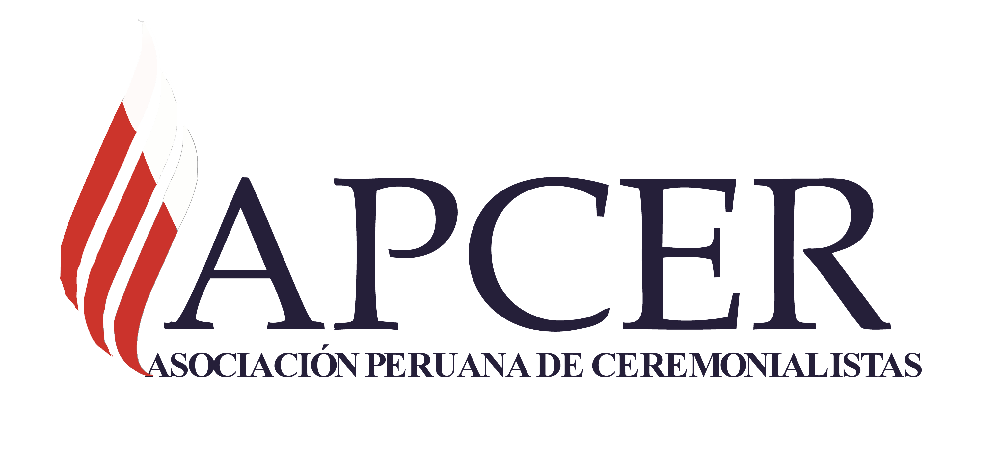
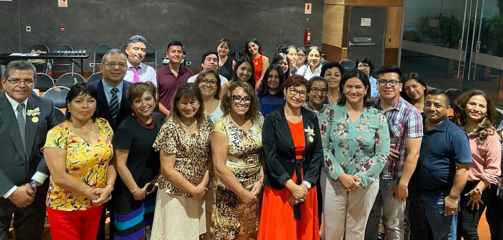

|

|
|---|
APCER es la Asociación Peruana de Ceremonialistas, institución creada en el Perú para congregar e intercomunicar a los profesionales del protocolo y ceremonial, así como a todos aquellos interesados en conocer el desarrollo de estas especialidades en el Perú y el extranjero.
Se constituyó el 17 de octubre de 2014 y formalizó su inscripción legal en los Registros Públicos de Lima el 26 de marzo de 2015 en la Partida N° 13398237
La APCER con sede central en la ciudad de Lima, nace con el propósito de profundizar y nutrir la práctica del protocolo y el ceremonial, y respaldar a quienes lo ejercen tanto en las instituciones gubernamentales como en las empresas privadas; pues, reconocemos la importancia que ambas disciplinas tienen para el manejo óptimo de la comunicación y relaciones públicas e institucionales.
Como proyecto nacional la APCER se fundó a iniciativa de su actual presidente, Ana Cecilia Prado Salazar y cuenta con coordinaciones regionales en Lima, Junín (zona centro) y Arequipa (zona sur), las cuales permitirán a más profesionales integrarse a la Asociación y participar de forma activa en nuestra agenda institucional.
